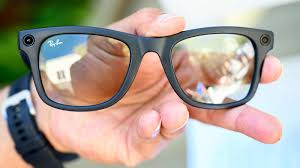

Imagine a world where the visually impaired can read, recognize faces, and navigate their surroundings with ease. Envision Glasses, a wearable assistive device, is making this a reality. Built on Google Glass Enterprise Edition 2, these AI-powered smartglasses are designed to provide independence and accessibility to individuals who are blind or have low vision.
Features of Envision Glasses
- Instant Text: Speaks out text as it appears in front of the user
- Scan Text: Reads long pieces of text out loud in multiple languages
- Detect Light: Detects the intensity and direction of light sources
- Recognize Cash: Identifies banknotes in multiple currencies
- Detect Colors: Detects the color of objects
- Find People: Recognizes faces and alerts the user
- Video Call: Makes hands-free video calls to trusted friends and family
How Envision Glasses Work
The Envision Glasses use a camera to capture visual information, which is then processed by AI technology, including ChatGPT, to provide an audio description of the scene. The device can read text, recognize faces, detect light and colors, and even identify objects.
Benefits of Envision Glasses
- Independence: Envision Glasses provide users with the ability to access visual information independently
- Accessibility: The device is designed to be worn all day, making it a convenient and accessible tool
- Improved Quality of Life: Envision Glasses can improve a user's overall quality of life by enhancing their ability to navigate and interact with their surroundings
Editions of Envision Glasses
Envision Glasses come in three editions: Read Edition, Home Edition, and Professional Edition. Each edition offers varying levels of features and functionality, with the Professional Edition offering the most comprehensive range of features.
Conclusion
Envision Glasses are a game-changer for the visually impaired. With their innovative technology and user-friendly design, these smartglasses have the potential to revolutionize the way individuals with visual impairments interact with the world around them. As the technology continues to evolve, we can expect even more exciting developments from Envision Glasses.
Stay tuned as Envision continues to innovate and expand the capabilities of these remarkable smartglasses.